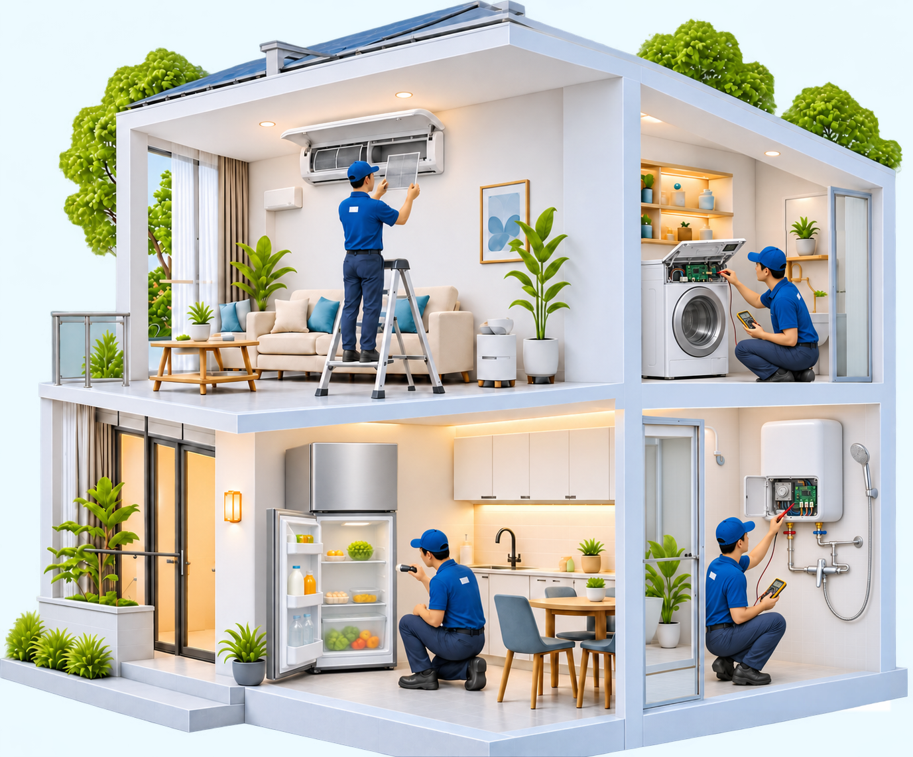

Giữ hình ảnh quen thuộc.
Thêm nhịp làm việc.
Người thợ kiểm tra lưới lọc, bo điều khiển máy giặt, tủ lạnh và bộ phận điện bên trong máy nước nóng. Các thao tác lặp liên tục.
- Ngôi nhà và thiết bị đứng yên
- Giữ tư thế người thợ, không rung cả cơ thể
- Bốn thao tác chuyển động liên tục
Bản thử chuyển động tay tại khoang điện đã mở. Chưa phải hoạt hình đầy đủ từng khớp hoặc thay đổi tư thế. Trang home hiện tại được giữ nguyên.

Bốn thao tác lặp liên tục